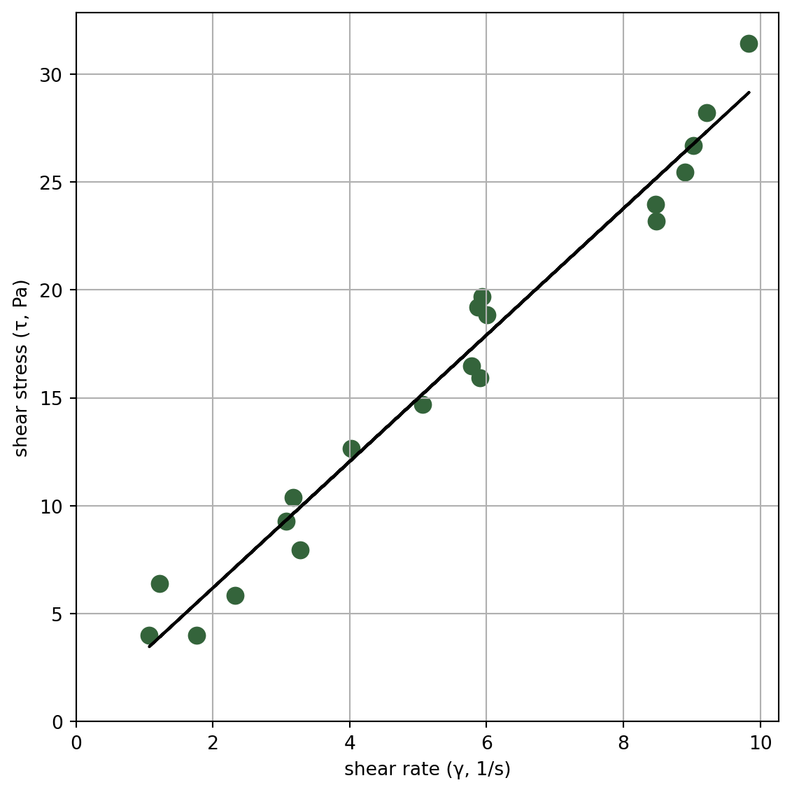
Linear Regression
Outline
- Introduction to linear regression
- Fitting regression models to data
- Interpreting regression models
- Assessing goodness-of-fit
- Making predictions from regression models
1 Introduction to linear regression
Why linear models?
- We often fit linear models because:
- Sometimes the underlying relationship is approximately linear
- A simple model might be “good enough” for our purposes
- They might provide a good approximation to nonlinear relationships over a narrow region
- It often makes sense to check first if a linear relationship fits; if it doesn’t, we can fit more complex models
Why linear models?
Remember …
All models are wrong, but some are useful.
G.E.P. Box, 1920–2013
Example: estimating viscosity
- From theory, the slope of the relationship between shear stress \(\tau\) and shear rate \(\gamma\) is the viscosity of the fluid \(\eta_1\) \[ \tau = \eta_0 + \eta_1 \gamma \]
- Because of variability and noise (instrumental, raw material), the points are scattered about a straight line
- We postulate a statistical model for the observed data \[ \tau_i = \eta_0 + \eta_1 x_i + \epsilon_i,\,\,\, \epsilon_i \sim N(0, \sigma^2) \]
- The parameters \(\eta_0\) and \(\eta_1\) are constants whose values have physical meaning and that we want to estimate
Example: estimating viscosity
- After carrying out an experiment, we want to estimate the parameters and the associated uncertainty
- Using least squares, the estimate of the slope (\(\eta_1\)), the viscosity is \[ \widehat{\eta}_1 =2.93\,\,\mbox{PI} \] with a 95% confidence interval of \[ ([2.68, 3.18]) \]
Example: modelling pipe degradation
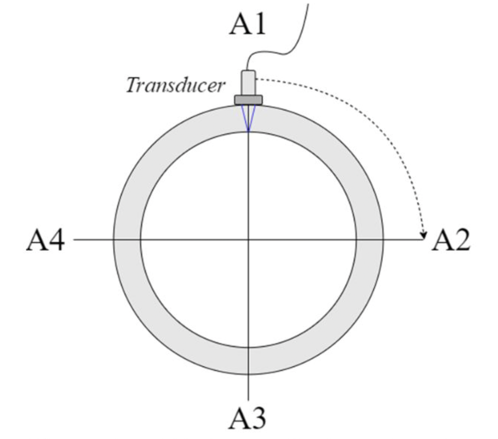
- There are many instances where we may fit a linear model because the observed relationship appears to be linear
- Consider, for example, measurements of the wall thickness of pipe spools measured over time using an ultrasonic thickness gauge
- Should we expect degradation to be linear?
- Can we predict when the thickness will reach the critical threshold?
Example: modelling pipe degradation
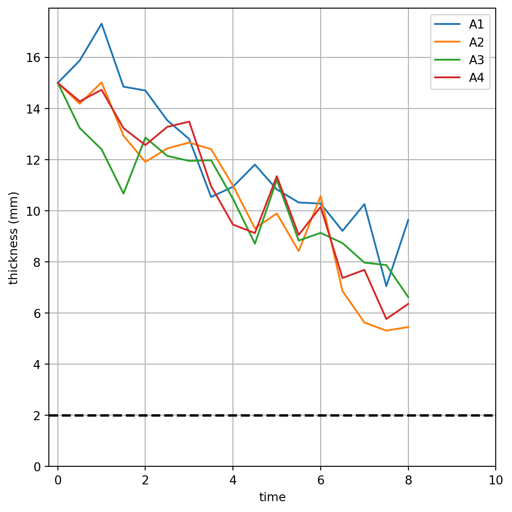
- Plot shows degradation of pipe wall over time at each location
- Traces appear to be linear, but with considerable noise—measured degradation is not monotonically decreasing
- What will the pipe thickness be at \(t=10\)?
Example: modelling pipe degradation
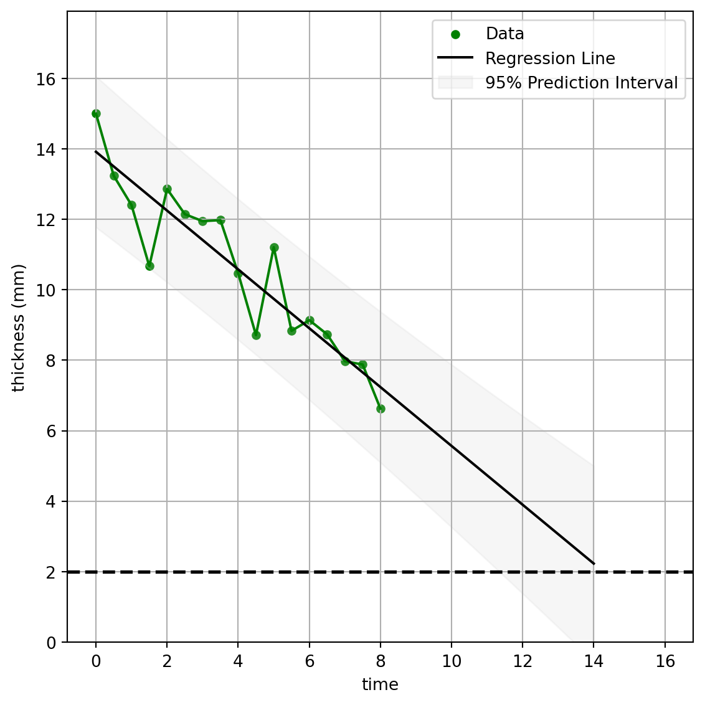
- For now, we consider modelling only the degradation trace at A3
- How can we find the ‘line of best fit?’
- How can we use it to predict when the degradation might reach the soft threshold?
- How should we calculate the uncertainty in any predictions we make?
2 Fitting regression models
Model and terminology
- We have \(n\) pairs of observations \[ (x_1, y_1), (x_2, y_2), \ldots, (x_n, y_n) \]
- The \(x_i\) are the values of the explanatory or predictor variable, and the \(y_i\) denote the values of the response variable
- We distinguish between \(x\) and \(y\) because we might want to:
- predict \(y\) from \(x\)
- explain the variability in \(y\) by \(x\)
- control \(y\) using \(x\)
Model and terminology
- Simple linear regression model is written as \[ y_i = \beta_0 + \beta_1 x_i + \epsilon_i,\,\,\,\,i=1, 2, \ldots, n, \] which consists of the ‘fixed’ or ‘deterministic’ part \(\beta_0 + \beta_1 x\) and a ‘random’ part \(\epsilon\) that is used to model the scatter (the ‘residuals’) about the underlying relationship
- Given pairs of observations \((x_i, y_i)\), the problem is to find estimates of the parameters \(\beta_0\) and \(\beta_1\) that defines the ‘line of best fit’
- Quantities estimated from the data are denoted by putting a hat (\(\hat{}\)) over them, e.g., \(\widehat{\beta}_0\), \(\widehat{\beta}_1\), etc.
- Estimates are found using the method of least squares, invented by Legendre (1805) and Gauss (1809)!
- Once the parameters have been estimated, and the model fit has been assessed, we can then, e.g., use the model for making predictions
Least squares: how it works
- Least squares is a geometric criterion: we find the line, that of all possible lines, minimizes the sum of the squares of the vertical distances from the data points to the fitted line
- The fitted value of the response variable at \(x_i\) is denoted \(\widehat{y}_i\), and it is calculated as \[ \widehat{y}_i = \widehat{\beta}_0 + \widehat{\beta}_1 x_i \]
- The differences are the residuals \(\widehat{\epsilon}_i = y_i - \widehat{y}_i\)
- To find the line that ‘best fits’ the data, we minimize the residual sum of squares (\(\mbox{RSS}\)), the sum of squared differences between \(y_i\) and \(\widehat{y}_i\): \[ \mbox{RSS} = \sum_{i=1}^n \widehat{\epsilon}_i^2 = \sum_{i=1}^n (y_i - \widehat{y}_i)^2 = \sum_{i=1}^n (y_i - \widehat{\beta}_0 - \widehat{\beta}_1 x_i)^2 \]
Least squares: which fit is better?
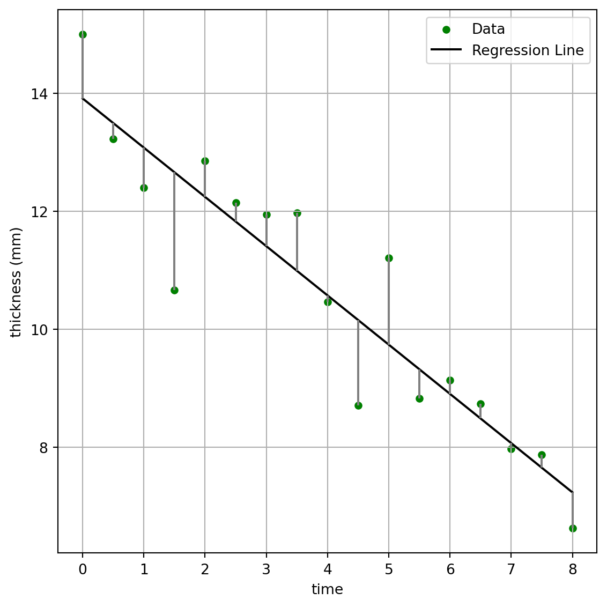
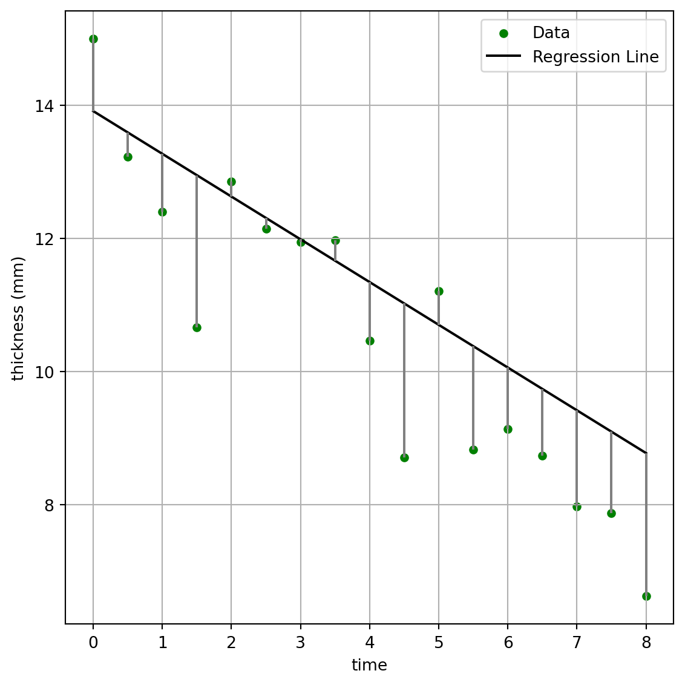
Least squares: which fit is better?
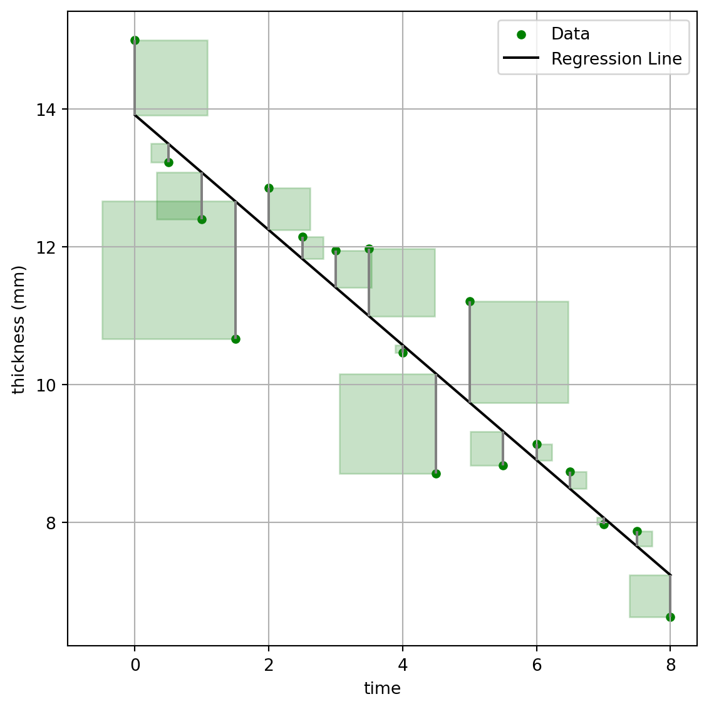
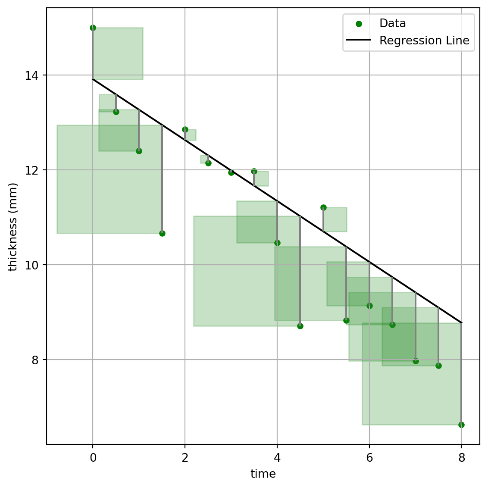
Least squares: assumptions
To use least squares to estimate the parameters and the associated uncertainty requires us to make (and then check!) some assumptions:
- The response varies about the underlying regression line with a Normal distribution
- The standard deviation of the responses is the same at all values of \(x_i\)
- The underlying relationship between the response and the explanatory variables is linear
- The observations are independent
3 Interpreting regression models
Regression in Python
We use the package statsmodels and its Ordinary Least Squares (OLS) solver:
In method we have to build the matrix \(\mathbf{X}\):
- This method uses a very powerful
formulasubmodule (see here) - We model \(y_\text{thickness} = \beta_0 + \beta_1 t\) using the syntax
thickness ~ time
OLS Regression Results
==============================================================================
Dep. Variable: thickness R-squared: 0.851
Model: OLS Adj. R-squared: 0.841
No. Observations: 17 F-statistic: 85.68
Covariance Type: nonrobust Prob (F-statistic): 1.37e-07
==============================================================================
coef std err t P>|t| [0.025 0.975]
------------------------------------------------------------------------------
Intercept 13.9169 0.423 32.893 0.000 13.015 14.819
time -0.8349 0.090 -9.256 0.000 -1.027 -0.643
==============================================================================
Notes:
[1] Standard Errors assume that the covariance matrix of the errors is correctly specified.Interpreting the output: summary
The least squares estimate of the degradation rate is \(\widehat{\beta}_1 =-0.83\,\mathsf{mm/unit~time}\), and the 95% confidence interval for \(\beta_1\) is \((-1.03, -0.64)\). Because zero is not within the interval, there is clearly a relationship between thickness and time.
- For moderate and large sample sizes, the approximation \(\widehat{\beta}_1 \pm 2\times \mathsf{\mbox{std err}}\) is good enough
The \(t\)-value tests the hypothesis \(H_0: \beta_1 = 0\) against \(H_1: \beta_1 \neq 0\); the \(p\)-value is so small that we would reject the null hypothesis in favour of the alternative
- But we knew that already by looking at the confidence interval!
The value of \(R^2 = 0.85\) is the fraction of the total variation in the data explained, or accounted for, by the regression
- When there is only one explanatory variable \(x\), \(R^2\) is identical to the squared correlation coefficient between \(x\) and the response \(y\). This is not true when there are several explanatory variables.
Interlude: sums of squares
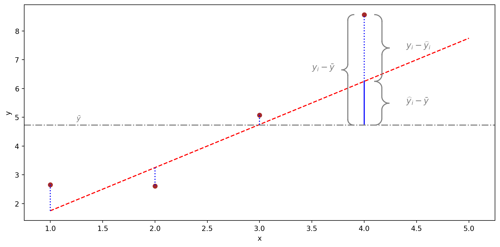
Geometrically, we can see that \((y_i - \bar{y}) = (\widehat{y}_i - \bar{y}) + (y_i - \widehat{y}_i)\), and we can show that \[ \sum_{i=1}^n (y_i - \bar{y})^2 = \sum_{i=1}^n (\widehat{y}_i - \bar{y})^2 + \sum_{i=1}^n (y_i - \widehat{y}_i)^2 \]
- The term on the left is the total sum of squares (\(\mbox{TSS}\))
- The second term on the right hand side is the residual sum of squares (\(\mbox{RSS}\)), shown on this slide
- The first term on the right is the sum of squares due to the regression (\(\mbox{SSReg}\))
So, we can write \[ \mbox{TSS} = \mbox{SSReg} + \mbox{RSS} \]
The total variability can be partitioned into two sources: the variability explained by the regression line (\(\mbox{SSReg}\)), and the unexplained, or residual, variability (\(\mbox{SSReg}\))
Interpreting the output: ANOVA
The analysis of variance (ANOVA) table shows the partition of the sums of squares (see \(\mathsf{\mbox{sum_sq}}\) in the ‘ANOVA’ tab of this slide)
\(\mbox{SSReg} = 71.106\); \(\mbox{RSS} = 12.449\); \(\mbox{TSS} = 83.555\)
The \(F\)-test assesses whether the variablity explained by the regression is ‘large’ compared to the unexplained variability; the \(F\)-statistic is the ratio of the two, taking into account the number of pieces of information (degrees of freedom, \(\mathsf{\mbox{df}}\))
When there is only one explanatory variable, the \(F\)-test and \(t-\)test are equivalent (the value of the \(F\)-statistic is the square of the \(t\)-statistic)
When there are \(p\) explanatory variables, \(x_1, x_2, \ldots, x_p\), ANOVA can be used to test the hypothesis \[ \beta_1 = \beta_2 = \ldots = \beta_p = 0 \] against the alternative that at least one of them is not equal to zero.
The RSS divided by its degrees of freedom (\(0.83\)) yields an estimate of the variance of the scatter, or ‘error’ about the fitted line.
Interpreting \(R^2\)
\(R^2\) is the proportion of the total variability (\(\mbox{TSS}\)) that can be explained, or accounted for, by the regression. It can be written as \[ R^2 = \frac{\mbox{SSReg}}{\mbox{TSS}} = 1 - \frac{\mbox{RSS}}{\mbox{TSS}} \]
\(R^2\) takes on values between 0 and 1
- \(R^2\) close to 1 indicates a large proportion of overall variability is accounted for by the regression
- Small \(R^2\) indicates that the regression does not explain much of the variability
- Can occur if the linear model is wrong, or if the error variance \(\sigma^2\) is large, or both
By itself, \(R^2\) can be a misleading measure of the goodness-of-fit of the linear model
- Increasing the range of the explanatory variable(s) will increase \(R^2\)
- Adding additional (even irrelevant) explanatory variables can increase \(R^2\)
Hazards of \(R^2\): Anscombe quartet
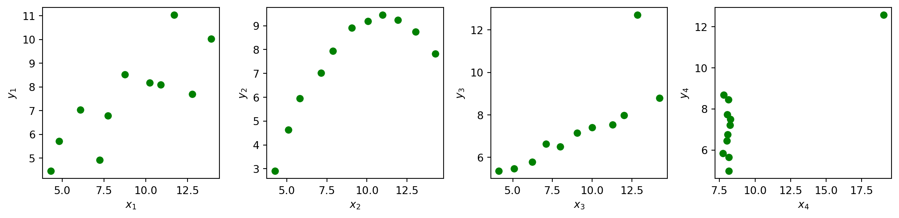
“Graphs are essential to good statistical analysis.”
Anscombe, F.J. (1973) Graphs in Statistical Analysis, The American Statistician, 27 (1), 17–21.
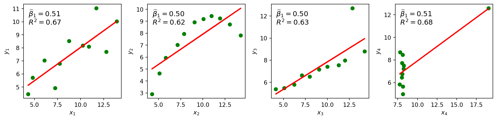
Moral: Never use \(R^2\) by itself as a measure of goodness-of-fit!
4 Assessing goodness-of-fit
Checking the conditions for inference
The conditions for inference involve the true, but unknown, regression line and deviations from this line
We can’t observe this line, but the regression line is our best estimate, and the residuals \((y_i - \widehat{y}_i)\) estimate the deviations
We check the conditions for regression inference by looking and evaluating graphs of standardized residuals
Condition 1
Response varies with a Gaussian distribution about the regression line
The deviations from the population regression line—estimated by the residuals—must have (approximately) a Gaussian distribution
Check a histogram of the residuals—is it roughly symmetric, or are there major departures from a Gaussian distribution?
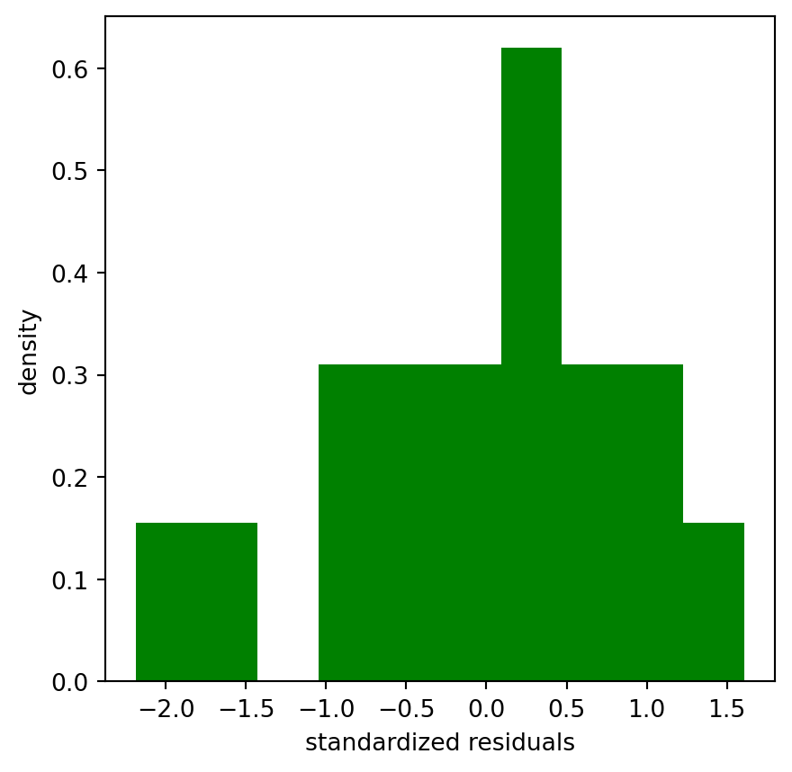
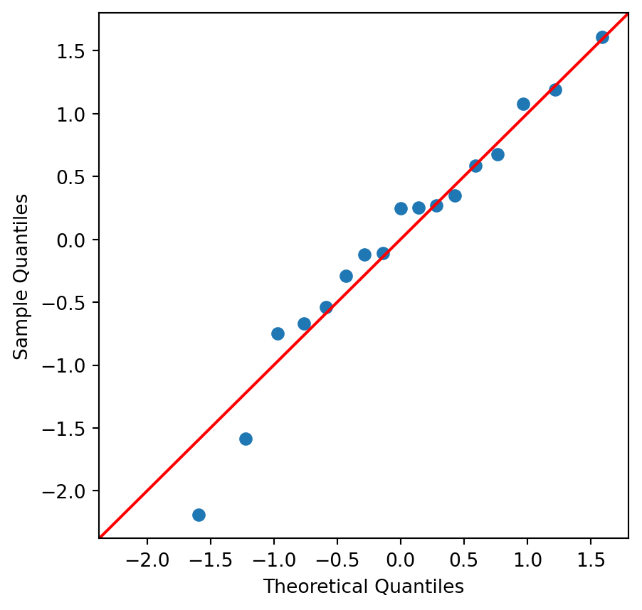
Condition 2
Condition 3
The relationship is linear in the population
Look at a scatter plot of the standardized residuals against fitted values \(\widehat{y}\)
Are there are any curved patterns or departures from linearity?
Can use scatterplot of \(y\) and \(x\), but residual plots magnify any departures
Pattern of points will be similar to Condition 1 when there is only one explanatory variable
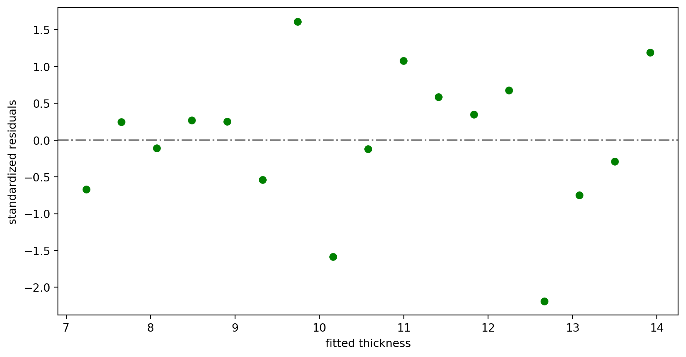
Condition 4
Degradation model: conclusions
There does appear to be a linear relationship between thickness reduction and time
The regression model accounts for about 85% of the total variation in the data; nevertheless, are there additional explanatory variables that might help explain additional variability, e.g., fluid characteristics?
Although the dataset is relatively small, the residuals do not show any departures from the assumptions
We tentatively accept the model and proceed with inference and predictions
Predicting degradation
- At position A1, after linear fitting we have the following model:
- \(y = 13.9169 - 0.8349 t\)
- To predict pipe thicknesses in the future we simply subsitute in values for time \(t\):
- e.g. \(t = 10\) the predicted thickness is \(y = 13.9169 - 0.8349 * 10 = 5.6\) mm
- To determine when the pipe will cross the critical thickness of 2 mm, we solve for \(t\):
- \(t = \frac{y - 13.9169}{-0.8349} = \frac{2 - 13.9169}{-0.8349} = 14.3\) days
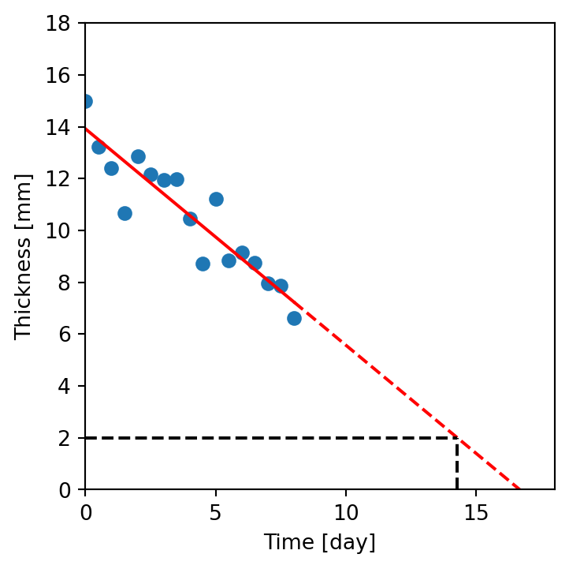
Taking uncertainty into account
What about our uncertainty?
So far we have ignored the uncertainty included in our linear fit and must propagate this uncertainty into predictions.
Handling uncertainty
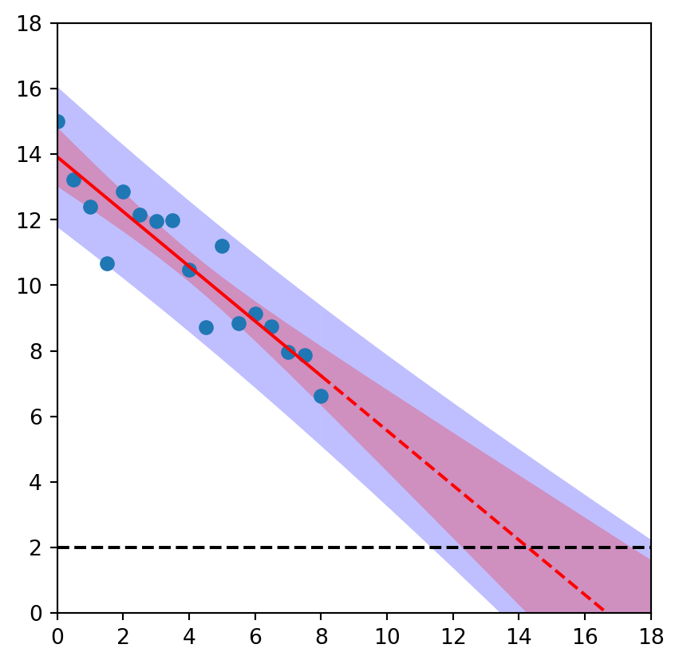
- Each measured \(y\) value has an associated error, and this means the model fit must also includes an uncertainty term
- Confidence interval is the region where we believe the underlying linear relationship is most likely to be given the uncertainty in the parameter estimation
- Prediction interval is the region where we believe new observations would lie, given the uncertainty in our model and assuming the future measurements have the same variability
Handling uncertainty
- A prediction interval is an uncertainty interval for \(y\) at some value \(x_0\)
- The expression for the standard error of prediction (SEP) depends on:
- The number of observations, \(n\), in the data set: the larger the data set, the smaller the SEP
- The squared difference \((x_n - \bar{x})^2\) between the future value of time and the mean value of the times in the training set.
- The larger the difference, i.e., the further in time that we want the make the prediction, the larger the SEP
- The scatter, or noise, about the line: the greater the scatter, the greater the SEP
Prediction intervals in Python
statsmodelscan compute both confidence and prediction intervals for us- Example: find the 95% confidence and prediction intervals at \(t=9\) and \(10\):
# Let's predict at time 9 and 11
# Create data frame with values at which we want predictions
new_times = pd.DataFrame({'time': [9, 10, 11]})
# Generate predictions and 95% prediction intervals
prediction = thick_model.get_prediction(exog = new_times)
prediction.summary_frame(alpha = 0.05) # 95% percentile window| mean | mean_se | mean_ci_lower | mean_ci_upper | obs_ci_lower | obs_ci_upper | |
|---|---|---|---|---|---|---|
| 0 | 6.402500 | 0.502233 | 5.332016 | 7.472985 | 4.185195 | 8.619805 |
| 1 | 5.567564 | 0.584587 | 4.321546 | 6.813582 | 3.260387 | 7.874740 |
| 2 | 4.732627 | 0.668969 | 3.306754 | 6.158501 | 2.323557 | 7.141697 |
- At \(t = 10\), with 95% confidence:
- the mean value of pipe thickness lies between \(4.32\) and \(6.81\) mm
- the predicted pipe thickness will lie between \(3.26\) and \(7.87\) mm
Degradation modelling: the fine print
- In this example, we’re predicting the value of thickness at given times.
- What we’d like to have is a confidence interval for the failure time; it’s possible to graphically extrapolate the intervals for thickness (‘extrapolated intervals’)
- In reliability analysis, it is much more common to ask the question, “What is the probability of failure (however defined) at some time \(t\) and what is the interval for the probability?”
- Can do so by calculating the failure time distribution
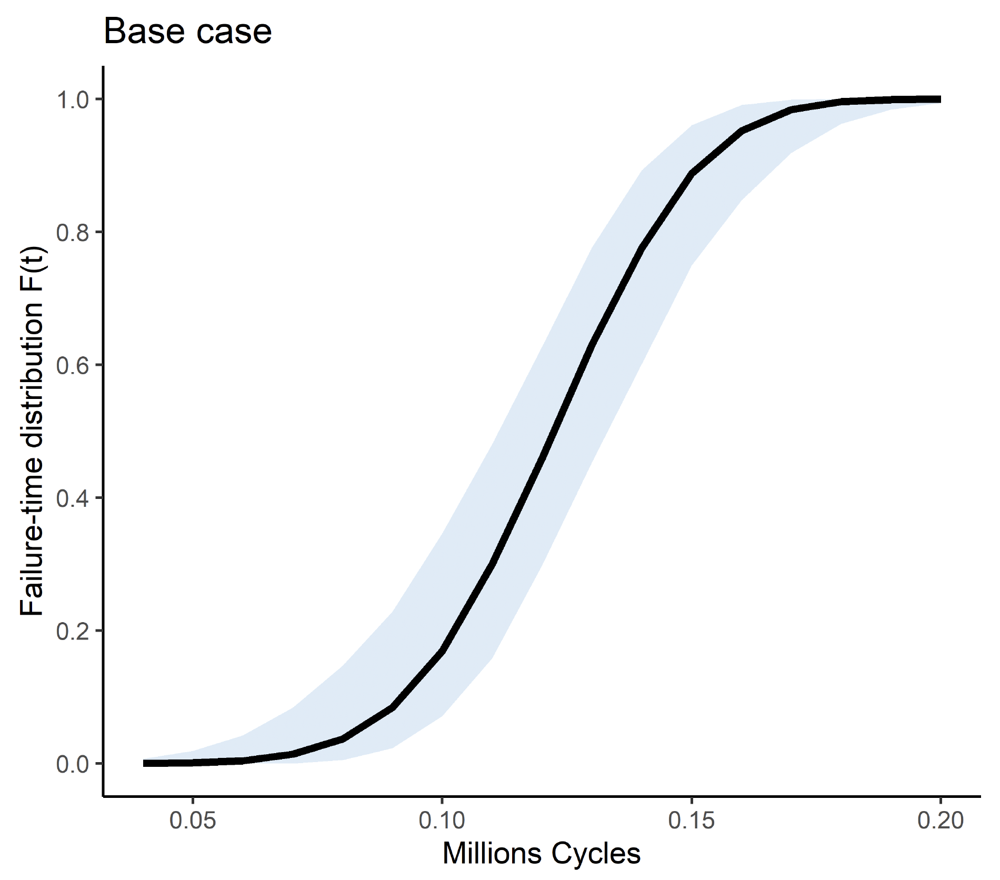

Data Science Transforming Maintenance